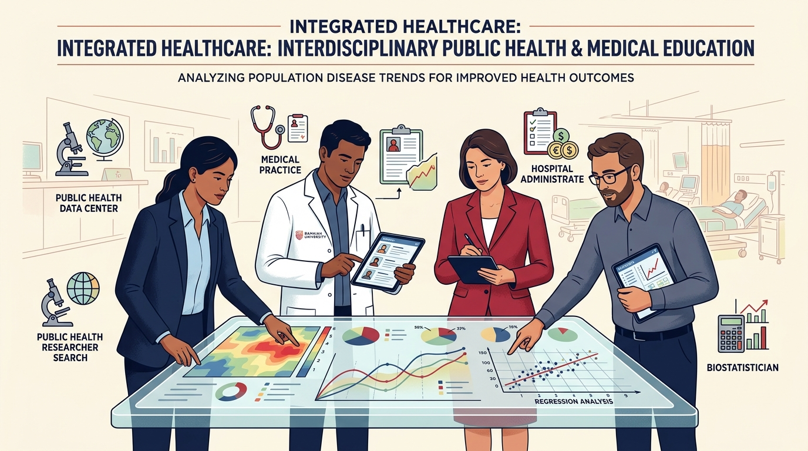
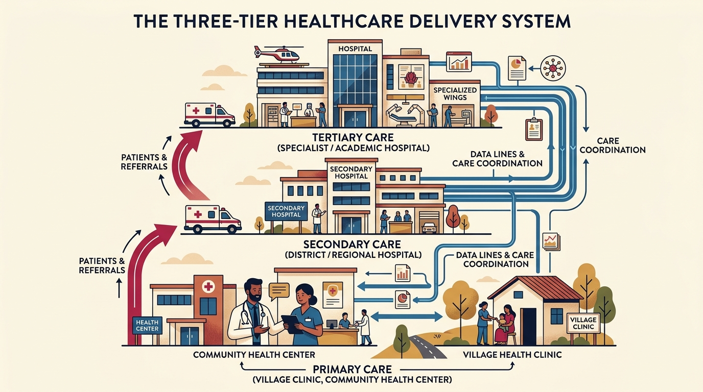
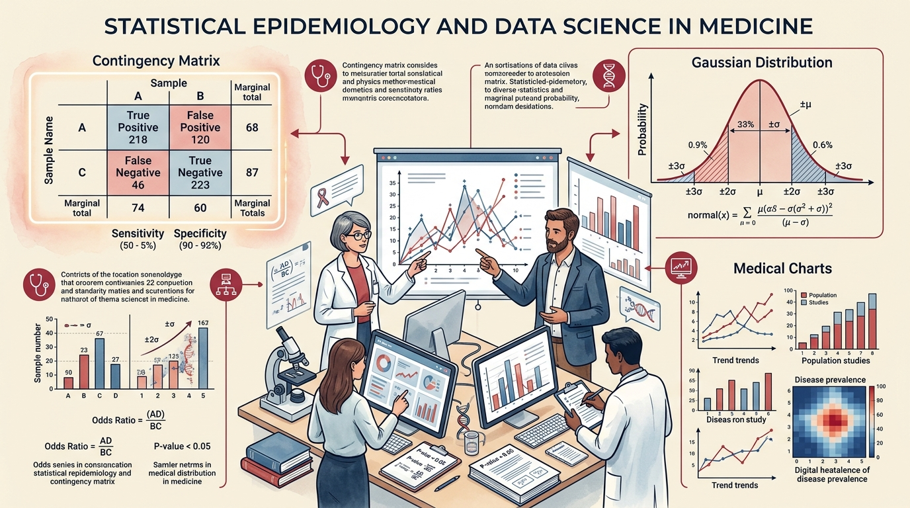

Welcome to the PRISM Foundation Course
The PRISM Bridge Course is an intensive 30-day orientation program designed for incoming scholars at the Ramaiah School of Public Health. Whether you enter with a clinical background (MBBS, BDS, AYUSH, Nursing, Allied Health) or a management/science background, PRISM establishes a common interdisciplinary language.
Throughout this course, you will navigate from community-level disease determinants to hospital operational workflows, mastering the quantitative tools, research ethics, and leadership principles necessary for modern healthcare leadership.

Public Health & Systems
The Iceberg Phenomenon, social determinants, 4 prevention levels, and IPHS 2022 three-tier healthcare delivery standards.
Healthcare Leadership
POSDCORB managerial functions, Hersey-Blanchard situational leadership, Herzberg motivators, and SBAR communication.
Epidemiology & Disease
Incidence vs prevalence, Relative Risk, Odds Ratios, 2x2 screening metrics, and hospital-acquired infection surveillance.
Biostatistics & Data Literacy
NOIR measurement scales, central tendency for skewed data, Gaussian normal curve, and the test selection decision engine.
Research & Bioethics
PICO question formulation, PubMed MeSH search strategies, Vancouver referencing, and ICMR 2017 ethical guidelines.
Medical Terminology & Coding
Greek/Latin word roots, combining vowels, anatomical directional axes, ICD-10/11, CPT, SNOMED-CT, and DRG hospital case-mix.
The Three-Tier Healthcare Delivery System
Connecting Ayushman Arogya Mandirs (Sub-Centres) and PHCs to CHCs and District Hospitals.

Statistical Epidemiology & Data Science
Integrating 2x2 diagnostic matrices, normal distributions, and clinical decision analytics.

Course Completion Progress: 0%
0 of 30 Lessons Completed • 0 of 6 Quizzes PassedComprehensive 30-MCQ Diagnostic Assessment
Administered on Day 1 to profile clinical vs non-clinical graduates, and re-administered at completion.
PRISM Course Completion Certificate
Enter your full student name to generate and print your official verified Ramaiah School of Public Health Certificate of Competence.
Prescribed Textbooks & Authoritative Clinical References
Comprehensive repository of prescribed textbooks and technical manuals approved by the RSPH Academic Council for MPH and MHA foundational training.
Gordis Epidemiology (7th Edition)
David D. Celentano & Moyses Szklo. Prescribed for disease transmission, incidence vs prevalence, 2x2 screening metrics, cohort/case-control designs, and causality.
Park's PSM (28th Edition)
K. Park. Standard reference for Indian public health delivery, levels of prevention, National Health Mission, and National Disease Control Programmes.
IPHS 2022 Guidelines (MoHFW)
Indian Public Health Standards. Prescribed for population norms, staffing, essential drug lists, and facility standards from Sub-Centres to District Hospitals.
Rothman & Daniel Biostatistics
Daniel W.W. & Rothman Encyclopedia. Covers variables, NOIR measurement, normal distributions, parametric/non-parametric tests, and p-values.
Medical Terminology for Healthcare Professions
Katherine Greene et al. (University of West Florida Pressbooks OER). 525 pages. Authoritative foundation text prescribed for Greek and Latin word building, combining forms, prefixes, operative/surgical suffixes (-ectomy, -otomy, -ostomy, -plasty), and systemic anatomical terminology across cardiovascular, respiratory, hemic, digestive, endocrine, neurological, and musculoskeletal systems.
d:\Antigravity projects\rsph-prism-portal\textbooks\Medical-Terminology-for-Healthcare-Professions-1774967424.pdf
Medical English: Word Building & Body Systems
Pressbooks Open Educational Resource. 542 pages. Prescribed for anatomical positioning, directional geometry (sagittal, coronal, transverse), abdominopelvic quadrants, clinical case descriptions, cellular adaptations (hyperplasia, dysplasia, metaplasia), and standardized hospital clinical abbreviations.
d:\Antigravity projects\rsph-prism-portal\textbooks\Medical-English-1779393688.pdf
WHO ICD-10, ICD-11 & SNOMED-CT Standards
World Health Organization & ABDM Guidelines. Prescribed for diagnostic coding conventions, ICD-11 stem and extension post-coordination, CPT procedural coding, SNOMED-CT EHR semantic mapping, and hospital DRG prospective payment systems.
About the PRISM Foundation Portal
PRISM (Public Health • Research Methods • Informatics • Statistics • Management) is the flagship 30-day transitional bridge curriculum designed by the Ramaiah School of Public Health (RSPH) at M. S. Ramaiah University of Applied Sciences (MSRUAS).
The Academic Mission
Bridging the gap between individual clinical medicine and population-level health systems. Whether candidates arrive from MBBS, BDS, AYUSH, Nursing, Pharmacy, or Management disciplines, PRISM unifies quantitative rigor, healthcare leadership, and epidemiology.
What Is the Pink Certificate?
The Pink Module Certificate of Mastery is an official verified academic credential awarded immediately upon mastering each core module (≥80% on the evaluation quiz and submission of the domain practical assignment). It embeds unique verification hashes and scholar discipline tags.
Advanced Neural RAG Engine
Powered by an indexed Retrieval-Augmented Generation (RAG) Architecture indexing 50 comprehensive curriculum units directly from Gordis 7th, Park 28th, IPHS 2022, Daniel Biostatistics, ICMR 2017 Guidelines, and Greene Medical Terminology & ICD-10/11. Delivers mathematically grounded, clinically structured answers.
⚡ How the PRISM Neural RAG Knowledge Engine Operates
Unlike standard web searches that scrape generic blogs or hallucinate clinical statistics, the PRISM RAG engine uses a deterministic multi-token vector semantic retrieval system running client-side with zero latency:
Expands medical acronyms (OR, RR, AR, R0, PPV, NPV, IPHS, FRU, CAUTI, VAP) and conversational queries into clinical synonym lattices.
Indexes 50 distinct knowledge units synthesizing epidemiology, biostatistics, hospital management, healthcare economics, bioethics, and medical terminology & clinical coding.
Every retrieved answer explicitly differentiates between community public health implications (MPH) and hospital administrative operational impacts (MHA).